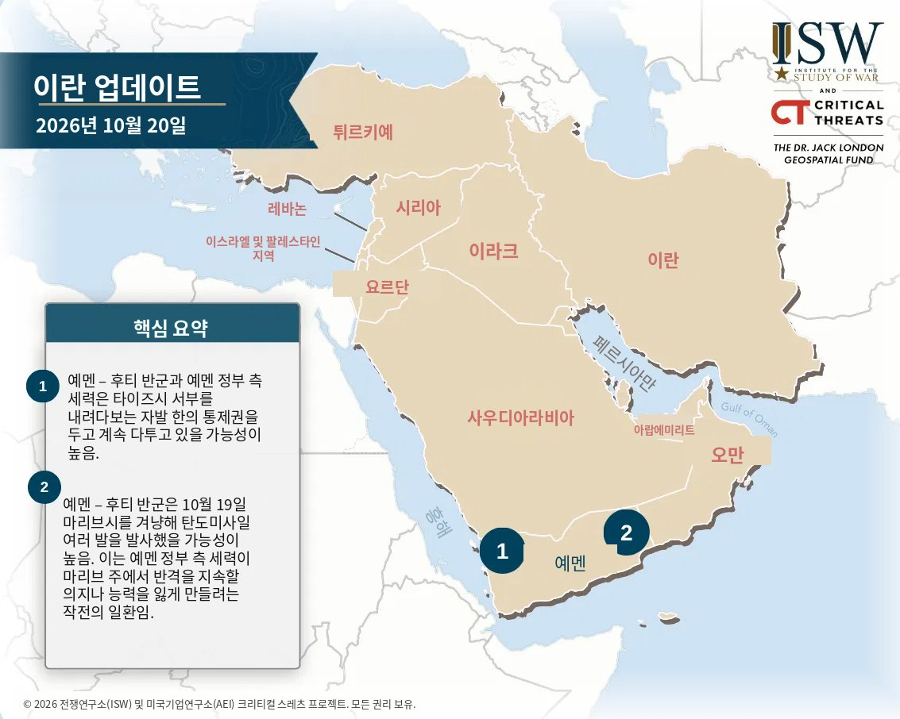
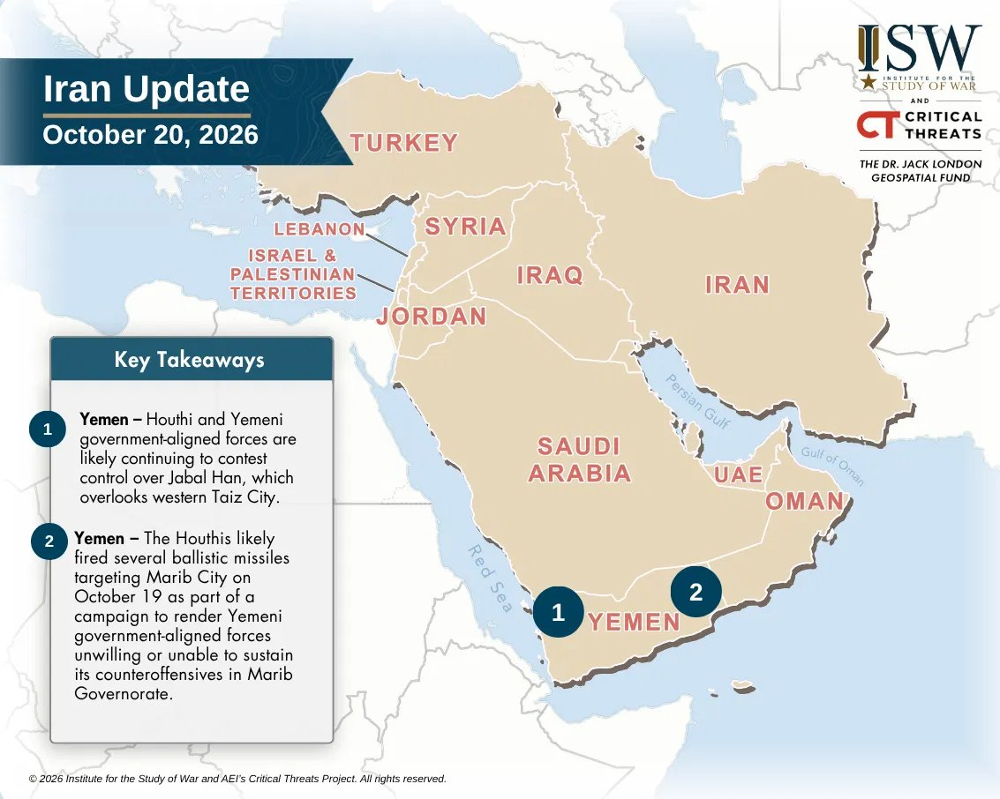
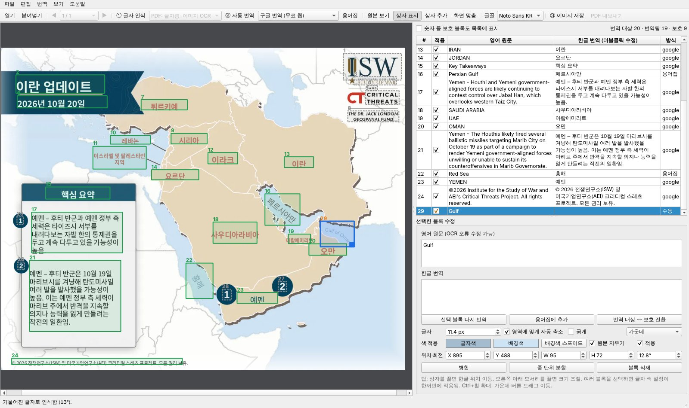

ISW·싱크탱크의 영문 지도, 도표, 인포그래픽, PDF 페이지에서 영어만 찾아 한글로 바꾸고 나머지는 원본 그대로 둡니다. 자동 번역 뒤 사람이 검수·수정하는 단계를 넣어 보고서에 바로 쓸 수 있는 품질을 만듭니다.


원본한글화ISW 일일 보고서와 싱크탱크 자료의 지도·도표를 매일 한글 보고서에 넣어야 하는 실무 문제에서 출발했습니다.
자동으로 80%를 처리하고, 남은 20%는 사람이 빠르게 다듬는 구조입니다.
이미지·PDF를 열거나 화면 캡처를 바로 붙여넣기. PDF는 페이지를 골라 작업.
Ctrl+O · Ctrl+Shift+VPP-OCRv6 기반 무료 OCR이 영어 줄을 찾고, 문장·문단·범례 항목 단위로 묶음. 기울어진 해협·바다 이름도 각도까지 인식.
F5용어집을 먼저 적용하고 무료 번역기로 문단 단위 번역. 막히면 파파고·DeepL 웹 결과를 붙여넣기.
F6번역문, 글자 크기·색, 위치를 고치고 원본/결과를 비교한 뒤 이미지나 PDF로 저장.
Space · Ctrl+S실제 ISW 지도로 시험하며 다듬은 기능들입니다.
배경색·글자색·크기·굵기를 원본에서 추정해 적용. 범례 글자 크기는 항목끼리 통일.
그래프·표 수치, 축척, 방위표, ISW·CT 로고 글자는 지우지도 번역하지도 않음.
기울어진 글자는 같은 각도로 교체, 도시 점(●)은 남기고 지명만 교체, 범례는 기호 옆 왼쪽 정렬.
하르키우·후티 반군 등 표기를 고정. 고친 번역은 버튼 하나로 용어집에 쌓여 다음부터 자동 적용.
상자 끌어 이동·크기 조절, 병합·분할, 놓친 영역 추가, 배경색 스포이드, 되돌리기.
본문 글자층은 원래 크기·색 그대로, 페이지 속 지도 글자는 OCR로. 여러 쪽 일괄 처리, 원본 뒤 대조 페이지 삽입.
왼쪽에서 상자를 직접 다루고, 오른쪽에서 원문·번역을 검수합니다.

처음 한 번만 설치하면 이후에는 더블클릭으로 실행합니다.
install 더블클릭 — 필요한 패키지를 .venv 폴더에 설치 (3~10분). 지원 버전 파이썬을 자동으로 찾아 사용run 더블클릭 — 프로그램 실행